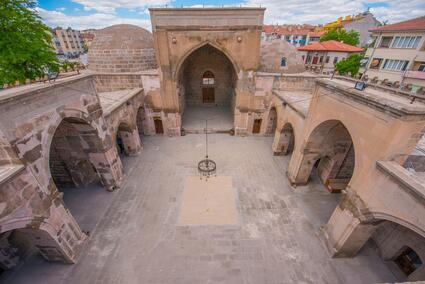

Zinciriye Medresesi Karamanoğullarından Yahşi Bey tarafından 1336 yılında yaptırılmıştır. Yerel (tüf) kesme taş ve tuğla kullanılarak yapılan medrese dört eyvanlı ve açık avlulu medrese planı düzenindedir. Portali Selçuklu geleneğini devam ettiren plastik Selçuklu motifleriyle işlenmiş, eyvanlar bitkisel ve geometrik biçimlerle tezyin edilmiştir. Medresenin diğer bir özelliği de dış duvarları üzerinde yer alan dendanelerden dolayı bir kale görünümü sergilemesidir.

Zinciriye Medresesi plan itibarıyla, dört eyvanlı, revaklı, üzeri tonoz ve kubbe ile örtülü 8 bölmeli, üstü açık avluludur. Giriş doğudaki Taç kapıdan sağlanmakta olup bu kapı istalaktit ve mihrapçıklarla süslü, basık kemerlidir. Eyvanlar tonoz örtülü olup bitkisel ve geometrik motiflerle bezemelidir. Üstü açık avlunun etrafında revaklardan sonra tonoz örtülü, değişik büyüklükte 6 oda, batıdaki ana eyvanın kuzey ve güneyinde ise üzeri kubbe ile kapatılmış iki büyük oda mevcuttur. Zinciriye Medresesi, tarihte iz bırakan önemli eğitim kurumlarından birisidir. Bu medresede yetişen pek çok ilim-irfan erbabı şahsiyetler, Anadolu’ya ışık saçmış ve Türk-İslam tarihine yön veren gelişmelere vesile olmuşlardır. Bunlardan en önemlisi olan ve Muhammed Fahr-üd-din Razi’nin soyundan geldiği muhtemel olan; hadis, tefsir, fıkıh, ahlak, edebiyat ve tıp dallarında bir çok eseri bulunan Cemaleddin Aksaray-i’ bu medresenin ilk Müderrislerindendir. Medrese, Osmanlı Devleti'nin son zamanında hapishane olarak kullanılırken, 1985 yılında ise Aksaray Müzesi olarak işlev görmeye başladı. Müzenin taşınmasının ardından restore edilen medrese günümüzde Aksaray Belediyesi tarafından sosyal ve kültürel etkinliklerde değerlendirilmektedir.